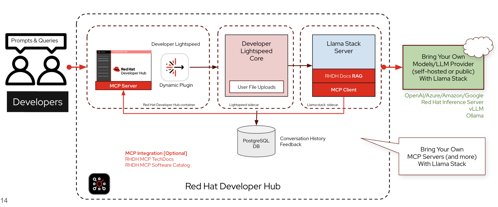

AI-Powered Developer Assistance with Developer Lightspeed
As modern software platforms continue to grow in complexity, developers spend a significant amount of time performing tasks beyond writing code. These tasks include searching documentation, understanding platform capabilities, troubleshooting issues, and learning new tools.
Red Hat Developer Lightspeed helps reduce this overhead by providing an AI-powered assistant directly within Red Hat Developer Hub.

Developer Lightspeed integrates into the existing Developer Hub experience through a plug-in, allowing developers to ask natural language questions without leaving the portal.
Examples include:
-
How do I deploy my application using GitOps?
-
Show me the documentation for this component.
-
Who owns this service?
-
How do I create a new software template?
Instead of manually searching multiple documentation sites or repositories, developers can interact with the platform using conversational prompts.
How Developer Lightspeed Works
When a developer submits a prompt through Developer Hub, the request is processed by the Developer Lightspeed service.
The service acts as an intermediary between Developer Hub and the configured Large Language Model (LLM). It is responsible for:
-
Authenticating requests
-
Retrieving additional context
-
Communicating with the configured AI model
-
Returning context-aware responses to the developer
Organizations have the flexibility to use either self-hosted or public AI models, depending on their operational and security requirements.
Supported providers include:
-
OpenAI
-
Microsoft Azure OpenAI
-
Google
-
Amazon Bedrock
-
Red Hat AI Inference Server
-
vLLM
-
Ollama
| Developer Lightspeed is model-agnostic. Organizations can choose the AI model that best meets their deployment, compliance, and performance requirements. |
Improving Response Accuracy with Retrieval-Augmented Generation (RAG)
Large Language Models provide general knowledge, but they are typically unaware of organization-specific platform information.
To improve the quality of responses, Developer Lightspeed uses a Retrieval-Augmented Generation (RAG) architecture.
Rather than relying solely on the model’s training data, the service retrieves relevant information from trusted sources before generating a response.
For Red Hat Developer Hub, these sources include:
-
Official Developer Hub documentation
-
Software Catalog metadata
-
TechDocs documentation (through MCP)
This allows the AI assistant to provide responses that are more accurate, relevant, and specific to the developer’s environment.
Extending Platform Knowledge with MCP
Developer Lightspeed can also use the Model Context Protocol (MCP) to retrieve information from trusted platform services.
Developer Hub exposes MCP tools that allow the AI assistant to access:
-
Software Catalog metadata
-
TechDocs documentation
Instead of relying solely on the language model’s knowledge, the AI assistant retrieves current platform information directly from Developer Hub, resulting in more reliable and context-aware responses.
| Think of MCP as a secure bridge that allows AI assistants to access trusted platform information rather than relying only on what the language model already knows. |
Conversation History
Developer Lightspeed can optionally persist conversations using PostgreSQL.
This enables organizations to:
-
Preserve conversation history
-
Collect user feedback
-
Review interactions for compliance or auditing
-
Analyze usage patterns to improve the developer experience
By default, conversation history can also be stored in memory for simpler deployments.
Key Takeaway
Developer Lightspeed enhances the Developer Experience by bringing AI-powered assistance directly into Red Hat Developer Hub.
Rather than replacing existing platform tools, it helps developers interact with them more efficiently by:
-
Answering platform-related questions
-
Retrieving trusted documentation
-
Accessing Software Catalog information through MCP
-
Providing context-aware guidance using Retrieval-Augmented Generation (RAG)
This enables developers to spend less time searching for information and more time building applications.